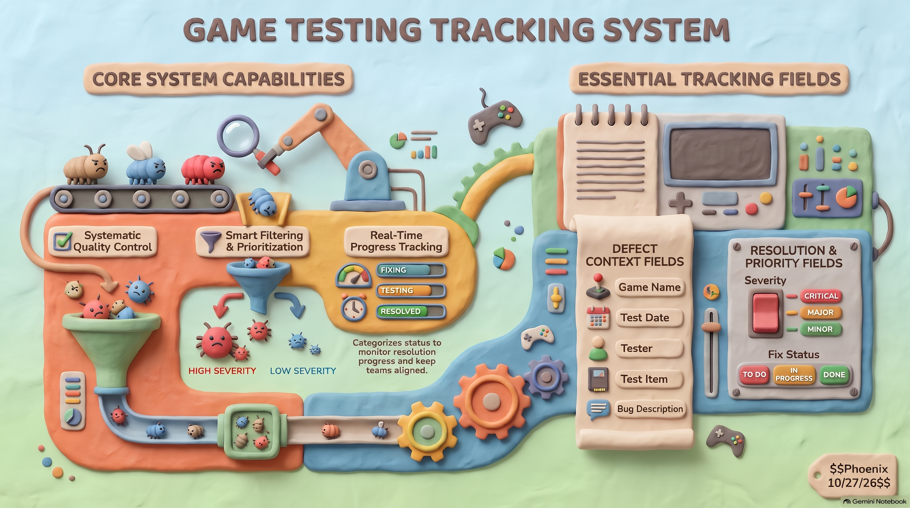

網頁應用
每日喝開水統計與記錄
專為現代人設計的健康補水追蹤工具，以直觀清爽的介面即時記錄每日飲水量。系統能動態換算目標達成百分比，並透過圖表視覺化呈現不同時段的飲水歷程，讓使用者能隨時檢視自身補水進度，輕鬆養成健康喝水規律。
打開作品彙整網頁應用、互動遊戲、數據分析、系統原型、商業 DM、AI 創意影像與原創音樂的全方位作品庫。
專為現代人設計的健康補水追蹤工具，以直觀清爽的介面即時記錄每日飲水量。系統能動態換算目標達成百分比，並透過圖表視覺化呈現不同時段的飲水歷程，讓使用者能隨時檢視自身補水進度，輕鬆養成健康喝水規律。
打開作品將日常時間顯示融入霍格華茲奇幻魔法世界觀，具備星象軌道動態與神秘符文指針。搭配 Web Audio 原生音效合成技術與流暢粒子特效，打造極具儀式感的時間流逝體驗，讓日常讀時與計時轉化為沉浸式魔法探索。
打開作品針對公開資訊觀測站之企業合併現金流量表設計的智慧視覺化分析工具。支援 Excel 財報資料直接解析匯入，自動拆解營業、投資與籌資現金流結構，透過互動圖表即時診斷企業現金週轉健康度，快速掌握營運含金量。
打開作品為在地知名便當店量身打造的形象展示與線上預購頁面。風格豪氣大方、充滿食慾感，提供完整菜單分類瀏覽、招牌主菜特寫以及直覺購物清單總計，大幅簡化上班族團體訂便當與個人外帶點餐流程，創造高滿意度的點餐體驗。
打開作品專注於資訊安全與隱私防護的前端純離線去識別化引擎。所有資料比對、姓名與身分假名化、遮罩皆在瀏覽器記憶體端完成，檔案絕不上傳至任何外部伺服器，提供企業與數據分析師零洩漏風險的極致資安保障與合規處理能力。
打開作品將真實世界的氣象數據與寶可夢世界觀巧妙結合。根據即時連線取得的溫度、濕度與天候狀態，動態切換相應的寶可夢屬性代表角色與動態天氣背景，讓查看每天氣溫與降雨機率充滿蒐集與探索樂趣，兼具實用與娛樂性。
打開作品結合高畫質偶像寫真與多功能時鐘套件的客製化網頁。使用者可自由切換喜愛的明星背景、時鐘字體排版與色彩濾鏡，並能自動儲存使用者偏好設定於本機端，隨時化身為質感滿分的手機待機桌布時鐘與個人化數位擺件。
打開作品深度探索西方吸血鬼歷史與神話源流的沉浸式數位百科。採用低調奢華的暗紅哥德式視覺設計，分章節詳述德古拉起源、吸血鬼弱點傳說與流行文化演進，為奇幻文學與神話考據愛好者打造獨具氛圍的深夜閱讀空間。
打開作品將十二星座占星運勢化為粉嫩可愛的貓咪插畫互動介面。提供事業、愛情、財運三大維度的週運指數解讀與專屬幸運色指引，搭配靈動的日系萌化動態效果，為使用者每週的開始帶來溫暖又充滿能量的陪伴與滿滿好運。
打開作品專為企業經理人打造的敏捷商業分析儀表板。具備離線快速載入與多維度財務比率計算能力，可即時繪製毛利率變化、營收趨勢與獲利敏感度圖表，協助管理層迅速洞察營運體質，在最短時間內精準評估商業策略成效。
打開作品充滿挑戰性的手搖茶飲店經營模擬網頁遊戲。玩家必須在限時壓力下迅速辨識顧客點單，精準調配茶底、甜度、冰塊與珍珠配料，隨著關卡推進提升名聲與收益，體驗身歷其境的手搖店創業手速大考驗與成就感。
進入遊戲注入魔法咒語儀式感的彩券號碼預測應用。使用者揮動魔杖觸發燦爛的畫布粒子爆炸特效與神聖音階回響，在四大學院神秘魔法的指引下隨機選出幸運號碼，讓原本單調的抽號過程化為驚喜連連的魔法儀式與破冰話題。
進入遊戲支援自訂名單與豪華視覺效果的現代化抽籤工具。搭載 Tone.js 精心調製的緊張倒數與獲獎打擊音效，配合高流暢度動態視覺展示，無論是尾牙大型抽獎、社群活動名額抽選或課堂互動皆能完美勝任並炒熱全場氣氛。
打開作品 商業廣告
商業廣告
專為頂級排餐品牌規劃的行銷宣傳海報。以厚重深邃的暗黑色系襯托鮮嫩炙燒的頂級牛排主圖，並透過嚴謹的西式字體排版、光影層次與餐點特色標註，營造奢華尊榮的用餐氛圍，有效刺激顧客食慾與高端消費慾望。
瀏覽高畫質海報 節慶促銷
節慶促銷
針對感恩節年度特惠活動量身繪製的促銷宣傳單。融合金黃暖色調與豐富豐收意象，將剛出爐的脆皮火雞作為視覺焦點，搭配清楚醒目的預購早鳥方案與訂購資訊，營造溫馨團聚的佳節儀式感並帶動外帶預訂業績。
瀏覽高畫質海報 系統架構
系統架構
全站技術架構與前端模組流程的高解析度藍圖。詳細拆解 SPA 路由、狀態管理、離線快取機制與外掛組件之互動關聯，透過標準化流程圖形語言清晰展現資料流向，為現代網頁工程奠定穩固且具擴展性的底層邏輯。
檢視架構藍圖 QA 標準
QA 標準
為遊戲開發團隊量身定制的完整品質保證 (QA) 與 Bug 追蹤作業標準指南。視覺化呈現測試案例覆蓋率、缺陷生命週期轉換狀態機與嚴重等級分類邏輯，協助測試工程師與企劃團隊建立高效無縫的除錯協作管道。
檢視完整指南
後台架構遊戲測試追蹤系統之資料庫實體關係與服務呼叫圖解。從客戶端報錯捕捉、自動化分配模組到即時通知整合，完整規劃現代化遊戲測試平台的微服務邊界，實現缺陷數據的高效流轉與可追溯性。
檢視架構圖 UI 原型
UI 原型
以聖經出埃及記為題材之益智拼圖遊戲 UI/UX 原型設計。結合古埃及壁畫風格與現代扁平化互動介面，規劃體力值、星級評分、歷史文物蒐集冊與拼圖解謎盤面，兼顧歷史文化沉浸感與流暢的操作人因工程。
檢視 UI 原型 關卡地圖
關卡地圖
針對全年齡層玩家打造的親和版出埃及記冒險地圖原型。以 Q 版可愛插畫重現紅海奇蹟、西奈半島等經典歷史篇章，設計線性闖關路線與寶箱解鎖機制，大幅降低宗教題材門檻並提升休閒探索樂趣。
檢視冒險地圖 資訊海報
資訊海報
統整聖經拼圖冒險全貌的巨幅資訊圖表海報。整合遊戲世界觀設定、歷史地理考證對照、各章節核心解謎機制與成就獎勵系統，以一體化排版呈現宏大的敘事脈絡，兼具視覺美感與高度資訊傳播價值。
檢視巨幅海報 知識管理
知識管理
高度結構化個人知識管理與專案追蹤系統模型。活用多維表格、關聯屬性 (Relations & Rollups) 與看板視圖，打造涵蓋閱讀筆記、代辦目標與靈感資產的第二大腦，實現資訊高效率檢索與人生系統化紀錄。
檢視資料庫設計專為國際貿易專才設計的高階個人特質與專業資歷視覺化看板。一頁式整合外語能力評級、跨國供應鏈實戰戰績、核心性格優勢與專案關鍵績效 (KPI)，以專業圖表取代枯燥文字，精準傳遞人才商業價值。
檢視專才檔案 普普藝術
普普藝術
結合美式波普 (Pop-Art) 網點、鮮明對比撞色與經典美漫擬聲詞邊框的自拍肖像二次創作。透過現代數位濾鏡與幾何色塊重構人物神情，展現大膽前衛的視覺張力，營造極具街頭潮流氣息的現代波普藝術風格。
瀏覽作品全圖 九宮格美學
九宮格美學
運用 Instagram 經典九宮格切片思維構建的整體視覺敘事作品。將單一宏大構圖分割為九個獨立卻互相呼應的方形畫幅，近看展現細膩特寫、遠觀匯聚震撼全貌，徹底突破傳統單張靜態照片的視覺展示邊界。
瀏覽作品全圖 奇幻靈獸
奇幻靈獸
融合幽藍月夜、神秘古木與威儀狼神的奇幻概念視覺作品。運用多層次丁達爾光效、細膩皮毛光影刻畫與幽邃景深，勾勒出守護自然秩序的靈獸威嚴，散發純粹、寧靜而強大不可侵犯的神秘史詩氛圍。
瀏覽作品全圖 概念肖像
概念肖像
以紫月神秘光芒為基底的超現實奇幻角色肖像。深邃的紫藍色調與冷光反差勾勒出主角銳利而沉著的雙眸，結合神聖圖騰與月夜能量場氛圍，將獸性與智慧完美融合，營造直擊心靈深處的空靈守護之美。
瀏覽作品全圖 次元守護
次元守護
探索未知虛空與次元交界點的奇幻角色設定畫作。以精巧面部細節、神秘異域符文與深邃光影明暗對比，詮釋守護次元平衡的宿命感與靜穆英姿，充滿強烈的電影敘事感與深邃的世界觀想像空間。
瀏覽作品全圖 當代攝影
當代攝影
將世界著名地標自由女神像賦予全新現代美學詮釋的實驗性視覺創作。透過特殊視角切入、強烈雲層氣勢烘托與當代色調微調，重塑歷經歲月洗禮的青銅雕像與火炬精神，傳遞跨越時代的自由意志信念。
瀏覽作品全圖融合賽博龐克風格與重度節奏感的原創電子音樂作品。運用層層堆疊的低頻打擊樂、失真合成器音色與冷冽金屬質感的音效採樣，模擬暴雨洗刷機械都市的緊張壓迫感，兼具強烈聽覺張力與電影級場景沉浸感。
探索人工智慧與人聲語意轉換邊界的實驗性配樂創作。樂曲中融入聲學數位濾波、節奏脈衝與空間回音殘響，將被代碼與算力拘束的意識以音樂旋律具象化，呈現極具未來科技感與深度思考的聽覺敘事體驗。
查無相符的作品
請嘗試不同關鍵字或切換分類標籤
Full-Stack Web & Creative Multi-Disciplinary Designer
熱愛將創意思維、視覺美學與實用工程技術融合的數位創作者。跨足純前端互動應用、資料視覺化、系統架構原型規劃、商業平面廣告、AI 概念影像與音樂音訊創作。深信優秀的作品不僅在於代碼的純粹，更是為使用者解決問題並傳遞美感體驗的綜合藝術。